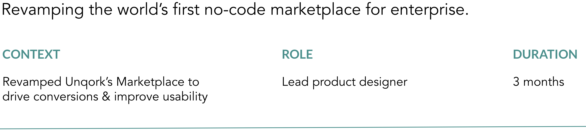

Marketplace Redesign

Unqork Marketplace is a unified one-stop-shop where Unqork creators can explore templates, products, and partners to accelerate their time to launch. I redesigned the website to improve usability, understanding of the site, and ability to explore new assets.
Want to learn more? Contact me for the full case study!